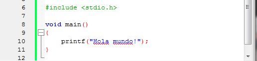
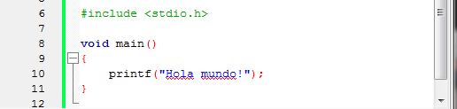

La filosofía de C se basa en proporcionar acceso directo a los recursos del sistema con abstracción mínima. A diferencia de lenguajes modernos que priorizan seguridad o productividad, C ofrece al programador control absoluto sobre la memoria y el procesador, exigiendo a cambio plena conciencia de cada operación. Este enfoque "lo que escribes es lo que obtienes" lo hace predecible y transparente, cualidades esenciales para programación de sistemas. Su sistema de tipos estático pero flexible permite manipulaciones de bajo nivel mediante punteros y aritmética de memoria. La ausencia de recolector de basura, orientación a objetos nativa o manejo automático de excepciones no son omisiones, sino decisiones de diseño que preservan el rendimiento y control característicos del lenguaje.Tipos de Datos
Los tipos en C son básicos pero potentes: caracteres (char), enteros de varios tamaños (int, short, long), números flotantes (float, double) y sus variantes unsigned. Las estructuras (struct) permiten agrupar datos heterogéneos, mientras las uniones (union) comparten espacio de memoria entre tipos. Los punteros (*) constituyen el concepto más poderoso - y peligroso - permitiendo manipulación directa de memoria y estructuras dinámicas. El manejo de memoria es manual: malloc/free controlan la asignación dinámica, requiriendo disciplina para evitar fugas o corrupción. Arrays y cadenas son meros bloques de memoria contigua, con terminación nul para strings. Este enfoque crudo proporciona eficiencia máxima a costa de mayor responsabilidad del programador.Ventajas
C sigue siendo indispensable en áreas donde el rendimiento y control son críticos: Sistemas operativos (Linux, Windows kernel), Dispositivos embebidos y IoT, Drivers de hardware, Compiladores e intérpretes, Bibliotecas de alto rendimiento (como OpenSSL), su portabilidad garantizada por estándares ANSI/ISO permite que código escrito hace décadas siga funcionando en arquitecturas modernas. La capacidad de interactuar directamente con hardware mediante memoria mapeada lo hace ideal para programación de microcontroladores. Desventajas
La libertad de C conlleva riesgos significativos: Corrupción de memoria por punteros inválidos, Desbordamientos de buffer que comprometen seguridad, Fugas de memoria por liberación incorrecta, Comportamiento indefinido en ciertas operaciones, La ausencia de mecanismos modernos como excepciones o genéricos aumenta la carga en el desarrollador para implementar abstracciones seguras. La verbosidad para tareas comunes (como manejo de cadenas) contrasta con lenguajes más modernos.
 La forma de escribir un hola mundo en C es: 
La forma de escribir un hola mundo en C es: 